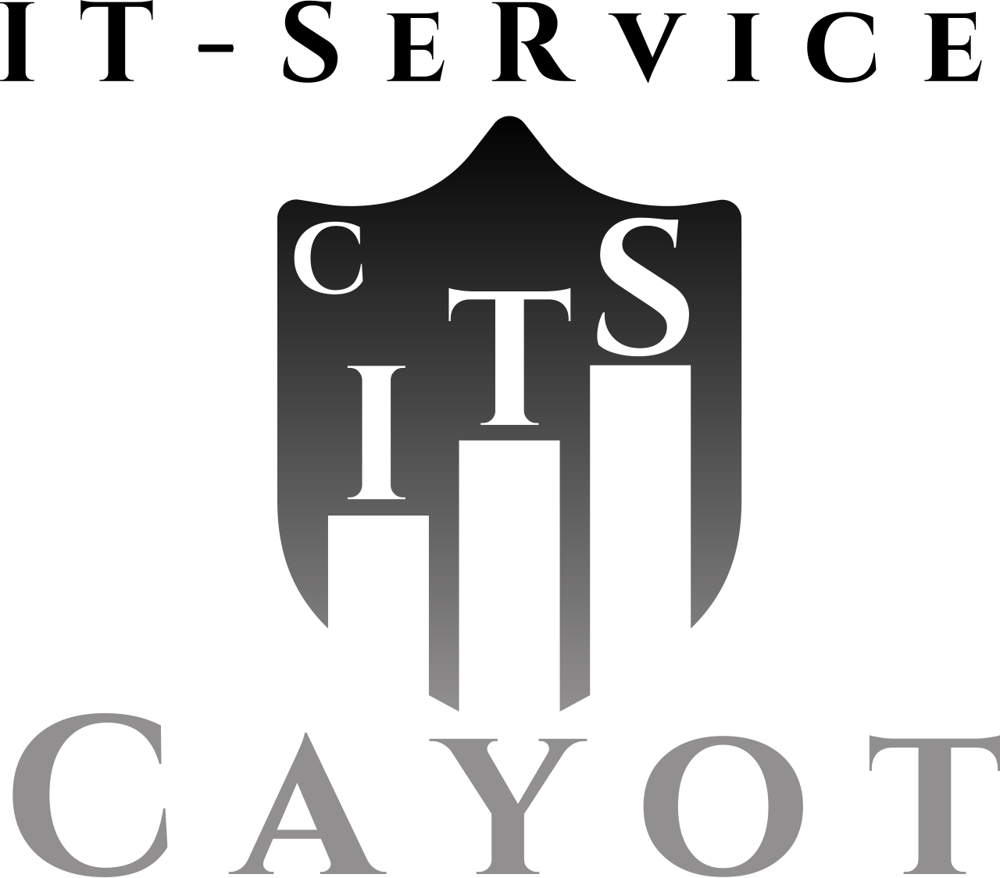

Zuverlässiger IT-Service für Ihr Unternehmen
Diese Seite dient als Beispiel-Landingpage von Cayot IT Service. Sie zeigt, wie professionelle IT-Dienstleistungen übersichtlich und modern präsentiert werden können.
Mehr erfahrenSchnelle und kompetente Unterstützung bei allen IT-Fragen und Störungen.
Schutz Ihrer Systeme und Daten durch moderne Sicherheitslösungen.
Wartung, Optimierung und Betreuung Ihrer IT-Infrastruktur aus einer Hand.
Besuchen Sie unsere Hauptseite für weitere Informationen zu unseren IT-Services.
Jetzt Hauptseite besuchen